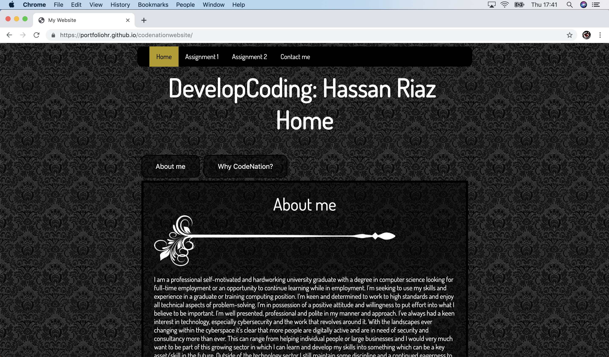
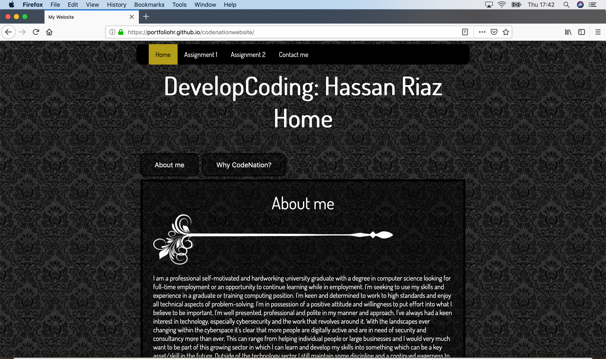

1.1 Describing the content and layout for each page
The website I’m creating will be hosting all the content for my work on assignments and so I will need to arrange each piece of work to be displayed separately rather than one large block of text which is unsightly and hard to read/navigate. The solution I’ve chosen is to split up assignments into different web pages and have a jump link to the individual units with the possibility of a moving small navigation bar for the jump links along with the static navbar at the top for the web pages.
Starting with the index page, I’d make this my home and have the basic content about me.
The following pages would look identical but the content it contains would be the separate assignment work.
For further detail on it, I have the content all within a wrapper which is 50% of the width of the screen and is centralized with a semi-transparent background to allow the white text to be a little more visible.
1.5 Describing copyright and other constraints affecting websites
What is copyright? “Copyright is legal right that protects the use of your work once your idea has been physically expressed.” [1] Now the question is how can this affect a website? Each country has its own copyright law so depending on how global the site is it may be under different copyright conditions however generally speaking copyright protection, as expressed in its definition, affects any original work meaning a website can not use someone’s else’s original work without the correct permissions and/or uses. So original work can be licensed to specify how it may be used by other people.
1.6 Describing access issues that need taking into account - describe issues that people with disabilities may face when using web pages and how we can overcome them
The first accessing issue that immediately comes to mind in terms of accessing web pages is whether a user can view the webpage correctly and easily on a different device or different browser. With there being many different options nowadays on what browser or device a website can be viewed on e.g chrome, firefox, opera or on different monitors, it is important that the design/layout is consistent otherwise the website will be misrepresented or not functioning making it limited in its user accessibility. To overcome this in my design, I have tended to use % for sizes as opposed to fixed pixel sizes as it allows the page to be dynamic and fit to the certain screen size it is being viewed on. Another issue is accessibility by people with disabilities, affecting disabilities can include short-sightedness, colour blindness or fully blind, this can be an issue as they won't be able to view the webpage as intended. To overcome this a few measures can be put into place, a consistent colour scheme with a large enough contrast and a not too small text font which allows people with sight issues to view the content much easier. One other solution which is more beneficial for people with sight issues would be to add a text to speech function which converts the written content into sound.
1.7 Describe which are the appropriate filetypes for websites
There are many filetypes that are appropriate and can be used on a website with the most obvious one being .html, which stands for “hypertext markup language”. This is the file in which the content of the website is written into such as all the text, along with html a .css file is commonly found as it work hand in hand with the html file to create the formatting and designs for the page. Aside from those two, files that are appropriate for the website are usually for the content meaning for images, appropritate filetypes could be .png, .jpg, .jpeg, .gif etc and for other forms of media, mp3,mp4, pdf, .mk etc.
3.1 Test your site appropriately to make sure it works on different browsers and that everything works as planned.
A screenshot from a chrome browser

A screenshot from a mozilla firefox browser

As you can see from the screenshots provided, my web page looks identical on both browsers so it's passed the browser test. This is due to not using any browser specific codes and features.